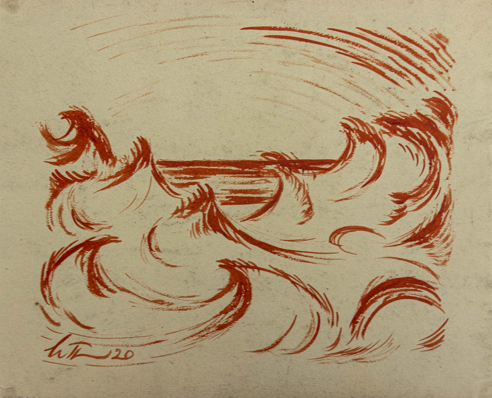
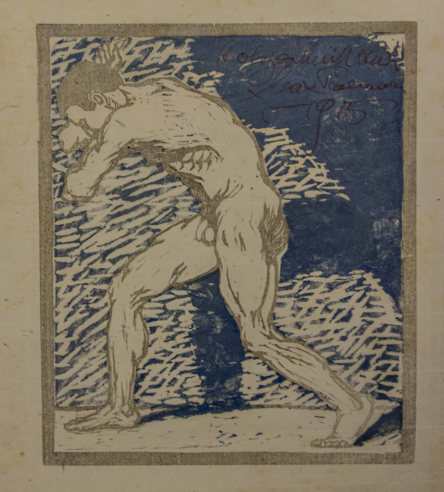

While LMU has not yet had the time to link photographs to every record in the
collection, these photos
illustrate some highlights of the collection.
Der Bucherwurm Amerikaheft, "The Bookworm, American issue" pamphlet, 1927. With woodcut cover
designed by Thalmann. In folder 316 of box 8
"Untitled" drawing, charcoal on paper. Entry 91.27 in box 9ov.
Charcoal sketch on paper, likely a study for Cathedral series. Entry 199 in box 5ov
Charcoal sketch on paper, likely a study for Cathedral series. Entry 200 in box 5ov
"Untitled" charcoal landscape on paper. Entry 198 in box 5ov
Deutscher Pfeiler, "German Pillar" pamphlet, June 1923. Woodcut cover designed by Thalmann. In
folder 315 of box 8
Feuer, "Fire" magazine article on Thalmann's work, March 1921. In folder 311 of box 8

"Style 34," ink and watercolor on paper, 1920. Entry 208 in box 5ov
German language article on Thalmann's work, date unknown. In folder 313 of box 8
"Untitled" pastel on paper, 1912. Entry 215 in box 5ov
"Untitled" pastel on paper, no date. Entry 91.68 in box 9ov
"Weimar" pencil landscape on paper, 1912. Entry 287 in box 6ov
"Untitled" pencil drawing, 1915. Entry 91.34 in box 9ov
"Untitled" watercolor on paper, 1919. Entry 209 in box 5ov
Wedding card, drawing or chalk-style lithograph on paper, 1922. Entry 91.46 in box 9ov
"America Series" woodcut, no date. Entry 278 in box 10ov

"Striving Male" woodcut, 1915. Entry 91.70 in box 9ov
"Passion 8," or "Resurrection" woodcut, no date. Entry 231 in box 10ov